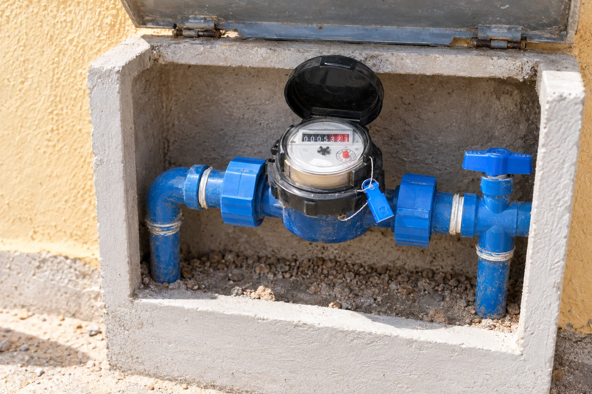

Área do Cliente
Serviços
Sua conta, seus serviços e os canais de atendimento em um só lugar.

Para você, cliente
Seu dia a dia
mais simples.


Entenda a sua fatura VITA
Sua conta
Entenda a sua fatura VITA
Veja o que significa cada campo da sua conta de água e esgoto.
Exemplo ilustrativo · dados fictícios
Ver a fatura ilustrativa
 CONTA DE ÁGUA E ESGOTO
CONTA DE ÁGUA E ESGOTOExemplo ilustrativo
Dados fictícios. Sem validade fiscal ou para pagamento.
Selecione um campo da fatura para entender o que ele significa.
Sua conta, campo por campo
1Matrícula
Número único que identifica a ligação de água e esgoto do cliente. É o dado mais pedido em qualquer atendimento.
2Referência
Mês e ano a que a fatura se refere (ex.: 08/2026), diferente da data de emissão.
3Central de atendimento
Canal oficial de contato da VITA Sertão para dúvidas, reclamações e solicitações do cliente.
4Data de emissão
Dia em que a fatura foi gerada pela VITA Sertão.
5Data de vencimento
Prazo final para pagamento sem multa ou juros.
6Total a pagar
Valor consolidado da fatura, já somando serviços, tributos e eventuais retenções.
7Avisos
Comunicados gerais e alertas aos clientes.
8Faixas de consumo
Cada faixa de m³ consumido tem um valor unitário diferente: quanto mais se consome, maior a faixa aplicada.
9Dados da nota fiscal
Número, série e demais dados que tornam a fatura um documento fiscal válido.
10Descrição dos serviços / lançamentos
Tabela com cada serviço cobrado e os tributos sobre o consumo.
11Dados de medição e consumo
- Leitura anterior / atual: números registrados no hidrômetro na leitura anterior e na atual.
- Número de dias: quantidade de dias entre uma leitura e outra.
- Consumo medido: diferença entre a leitura atual e a anterior, ou seja, o que o hidrômetro efetivamente registrou.
- Consumo faturado: volume que de fato entrou na fatura, podendo ser diferente do medido em casos de média ou revisão.
12Unidades atendidas
- Residencial: imóveis de uso doméstico.
- Comercial: estabelecimentos com atividade comercial.
- Industrial: unidades com uso industrial da água.
- Pública: órgãos e prédios públicos atendidos pela concessionária.
13Histórico de consumo
- Mês/ano, dias e leitura: registro mês a mês das leituras do hidrômetro.
- Volume (m³): consumo apurado em cada um dos meses anteriores.
- Número do hidrômetro: identificação do equipamento instalado no imóvel.
- Tipo de consumo: indica se o valor do mês foi medido normalmente ou estimado (por média, por exemplo).
Recadastramento
Dados atualizados
Recadastramento
O recadastramento é fundamental para garantirmos um atendimento ágil, o envio correto das suas faturas e avisos importantes sobre o abastecimento na sua região, além de manter ou conceder os benefícios da Tarifa Social.
Documentos necessários para a atualização
-
Pessoa Física
CPF, RG (ou documento oficial com foto), telefone celular com WhatsApp e e-mail.
-
Pessoa Jurídica
CNPJ, Contrato Social/Estatuto, CPF e RG do representante legal.
-
Comprovante de vínculo com o imóvel
Escritura, contrato de aluguel ou comprovante de posse (caso a conta vá para o nome de um novo titular).
Onde fazer a atualização
Pelo site e canais digitais
Atualize os seus dados na Área do Cliente/Agência Virtual quando o canal digital estiver disponível.
Atualizar meus dadosAtendimento presencial
Visite a loja de atendimento da VITA Sertão no seu município.
Encontrar uma lojaAtualização de Débito Automático
Atenção
Atualização de Débito Automático
Para continuar pagando sua conta com a comodidade do débito automático e evitar eventuais atrasos, é necessário solicitar o cadastramento junto ao seu banco ou canais de atendimento.
Como regularizar o seu Débito Automático
Na sua agência bancária
Entre em contato com seu gerente ou utilize os caixas eletrônicos do seu banco com uma conta recente em mãos.
A importância do hidrômetro
Medição do consumo
A importância do hidrômetro
O hidrômetro, popularmente conhecido como “relógio de água”, é um grande aliado da sua família e da gestão sustentável do saneamento.

Esse equipamento de medição de precisão tem como função principal registrar, de forma transparente e contínua, o volume de água que entra no seu imóvel. Muito além de determinar o valor da sua fatura, o hidrômetro é uma ferramenta indispensável para o consumo consciente e para a proteção do nosso abastecimento.
Por que o hidrômetro é tão importante?
-
Garantia de justiça na cobrança
Com o hidrômetro, você paga exatamente pelo volume de água que consumiu no mês. É o instrumento que garante um faturamento justo e transparente para cada cliente.
-
Identificação rápida de vazamentos invisíveis
Quando os hábitos de consumo da casa não mudam, mas os ponteiros ou números do hidrômetro continuam girando com todas as torneiras fechadas, é um sinal de alerta para vazamentos ocultos nas tubulações internas ou na caixa d’água.
-
Incentivo ao uso consciente
Acompanhar a leitura do hidrômetro ajuda a entender os hábitos de uso da água na residência, incentivando o combate aos desperdícios no dia a dia.
Cuidados e responsabilidades com o seu medidor
O hidrômetro é instalado pela VITA Sertão no ponto de entrada do imóvel, ficando sob a guarda do morador. Para garantir o bom funcionamento do equipamento e a leitura correta do seu consumo:
-
Mantenha o acesso livre
Evite colocar plantas, entulhos, grades trancadas ou materiais sobre o abrigo do hidrômetro, permitindo que a equipe de leitura faça o trabalho com facilidade.
-
Proteja o equipamento
Evite impactos, não apoie objetos pesados e mantenha animais de estimação afastados do local do medidor.
-
Não viole o lacre
O hidrômetro é um bem público de medição. Romper o lacre, tentar alterar o funcionamento ou realizar ligações clandestinas (“gatos”) é uma infração sujeita a penalidades previstas em lei.
Em caso de dúvidas sobre a leitura, suspeita de defeito no aparelho ou vazamento no cavalete, entre em contato com os canais de atendimento da VITA Sertão.
Fatura digital
Sem papel
Fatura digital
Com a fatura digital, sua conta chega em formato eletrônico pelo canal cadastrado e pode ser consultada de onde você estiver. É mais prática, reduz o uso de papel e ajuda a manter suas contas organizadas.
O canal e o procedimento de adesão serão informados pela VITA Sertão. A versão digital tem as mesmas informações da conta convencional.
Aderir à Fatura DigitalFormas de pagamento
Pagamento
Consulte na própria fatura os meios de pagamento disponíveis e fique atento à data de vencimento para evitar multa e juros.
-
Agência Virtual
Emita a 2ª via da conta e pague com o código de barras.
-
Aplicativo ou internet banking
Pague pelo aplicativo do seu banco usando o código de barras da fatura.
-
Débito automático
A conta é paga direto na sua conta bancária, na data de vencimento.
-
Confira antes de pagar
Verifique o nome do beneficiário e os dados da conta antes de concluir o pagamento.
Lojas de Atendimento
Atendimento presencial
Lojas de Atendimento
Encontre a loja da VITA Sertão mais próxima de você.
Todas as lojas
-
Petrolina
Loja Petrolina
Endereço da unidade em atualização.- Horário de atendimento: consulte os canais oficiais.
Endereço, telefone e horários em atualização no site oficial. Confirme antes de visitar.
Consultar atendimento -
Ouricuri
Loja Ouricuri
Endereço da unidade em atualização.- Horário de atendimento: consulte os canais oficiais.
Endereço, telefone e horários em atualização no site oficial. Confirme antes de visitar.
Consultar atendimento -
Salgueiro
Loja Salgueiro
Endereço da unidade em atualização.- Horário de atendimento: consulte os canais oficiais.
Endereço, telefone e horários em atualização no site oficial. Confirme antes de visitar.
Consultar atendimento
Tarifas
Quanto você paga
Tarifas
A tarifa de água e esgoto da VITA Sertão segue as regras do contrato de concessão e é regulada e fiscalizada pela Agência de Regulação de Pernambuco (ARPE).
O valor da fatura depende de dois fatores: a categoria do imóvel e o volume de água consumido no mês, registrado pelo hidrômetro. Quando o imóvel tem o serviço de esgotamento sanitário, a cobrança segue as regras definidas pela estrutura tarifária e pela regulação.
A proposta vencedora da concessão do Sertão incluiu desconto tarifário de 5% sobre a tarifa de referência definida na licitação.
Faixas de consumo: o consumo do mês é dividido em faixas de m³, e cada faixa tem um valor unitário diferente. Quanto mais se consome, maior a faixa aplicada.
Categorias de imóvel
-
Residencial
Imóveis de uso doméstico.
-
Comercial
Estabelecimentos com atividade comercial.
-
Industrial
Unidades com uso industrial da água.
-
Pública
Órgãos e prédios públicos atendidos pela concessionária.
Tarifa Social
Benefício
Tarifa Social
A Tarifa Social é um benefício garantido a famílias em situação de vulnerabilidade econômica.
A VITA Sertão estima que cerca de 60 mil famílias de baixa renda sejam beneficiadas na região.
Para ter direito, é preciso atender a um destes critérios:
-
Famílias inscritas no CadÚnico
Com renda per capita de até meio salário-mínimo.
-
Beneficiários do BPC
Benefício de Prestação Continuada, pago a pessoas idosas ou com deficiência.
Tarifa Vulnerável
A concessão mantém a Tarifa Vulnerável, benefício já vigente na região para alguns clientes. Ela é diferente da tarifa residencial comum e busca proteger famílias em situação de maior vulnerabilidade.
Os critérios de enquadramento, o limite de consumo, o valor da tarifa e a forma de cadastro serão divulgados nesta página, de acordo com a regulamentação da ARPE e as regras comerciais da VITA Sertão.
Contrato de Adesão
Documento
Contrato de Adesão
O Contrato de Adesão reúne as condições gerais da prestação dos serviços de água e esgoto, com os direitos e deveres do cliente e da VITA Sertão.
Dúvidas Frequentes
Ajuda
Dúvidas Frequentes
Clique em uma pergunta para ver a resposta.
Ver a página de Dúvidas FrequentesO que é a VITA Sertão?
A VITA Sertão é a nova concessionária responsável pela operação, manutenção, modernização e expansão dos serviços de distribuição de água, coleta e tratamento de esgoto, além da gestão comercial dos clientes em 24 municípios do Sertão de Pernambuco. A VITA nasce com o objetivo de impulsionar e transformar o saneamento da região, com presença local, geração de empregos e compromisso de longo prazo, contribuindo diretamente para a saúde, a qualidade de vida e o desenvolvimento da população.
A VITA Sertão é uma empresa de fora ou é local?
A VITA Sertão é uma empresa do Sertão. Nossa sede administrativa fica em Petrolina, o principal econômico da região. Temos polos operacionais em Ouricuri e em Salgueiro, garantindo presença próxima em toda a área atendida. Nosso time será formado majoritariamente por profissionais da própria região, pessoas que conhecem o Sertão, suas necessidades e seus desafios.
Quais municípios são atendidos pela VITA Sertão?
A concessão abrange 24 municípios do Sertão de Pernambuco: Afrânio, Araripina, Bodocó, Cabrobó, Cedro, Dormentes, Exu, Granito, Ipubi, Lagoa Grande, Moreilândia, Orocó, Ouricuri, Parnamirim, Petrolina, Salgueiro, Santa Cruz, Santa Filomena, Santa Maria da Boa Vista, São José do Belmonte, Serrita, Terra Nova, Trindade, Verdejante, conforme a área de concessão definida pelo Contrato.
Quem está por trás da VITA Sertão?
A VITA Sertão é uma empresa investida do Fundo V de Infraestrutura do Patria Investimentos, uma das maiores gestoras de ativos alternativos da América Latina, com mais de 20 anos de experiência em grandes projetos de infraestrutura, como rodovias, energia, logística e data centers.
Quando a VITA Sertão começa a operar?
O contrato foi assinado em 02 de abril de 2026. A partir dessa data, iniciou-se o período de operação assistida: até seis meses em que a VITA Sertão acompanha de perto toda a operação junto à Compesa, estrutura suas equipes, realiza diagnósticos técnicos e planeja os investimentos. A gestão plena deve começar no final do mês de outubro de 2026, quando a VITA Sertão assume integralmente a responsabilidade pelos serviços de distribuição de água, gestão comercial e coleta e tratamento de esgoto.
Quando a VITA Sertão assume completamente a gestão?
A gestão plena começa em 28 de setembro de 2026, com a assinatura do Termo de Transferência. A partir dessa data, a VITA Sertão passa a ser a única responsável pela distribuição de água tratada, pelo atendimento comercial (contas, ligações, atendimento ao cliente) e pela coleta e tratamento de esgoto nos 24 municípios da concessão.
O que é uma concessão de saneamento? Como funciona?
Uma concessão é um modelo em que o poder público, neste caso, o Estado de Pernambuco, mantém a titularidade do serviço, mas contrata uma empresa privada, por meio de um processo competitivo, para operá-lo, investir na infraestrutura e prestar o serviço à população por um período determinado. É o mesmo modelo usado em rodovias, aeroportos e energia elétrica. A água continua sendo um bem público. A VITA Sertão, no geral, compra a água produzida pela Compesa e é responsável por distribuí-la até as residências, além de cuidar do esgoto e gerir o atendimento comercial, tudo sob regras, metas e fiscalização rigorosa do Estado e Agência Reguladora.
Como funciona o modelo de concessão de saneamento no Estado de Pernambuco?
A concessão dos serviços de água e esgoto do Estado de Pernambuco é uma concessão parcial – a concessionária é responsável pela distribuição de água, operação doa serviços de esgoto e a gestão comercial. A Compesa continuará existindo como empresa e continuará responsável pela produção de água, de forma que concessionária possuirá um contrato de compra de água com a Compesa no mesmo prazo de 35 anos da concessão. A área da concessão são os 24 municípios do bloco e localidades pré-definidas no Contrato. A concessionária terá a regulação e fiscalização da Agência Reguladora (ARPE) e Estado de Pernambuco (Poder Concedente).
A Compesa vai acabar?
Não. A Compesa continua pública e segue responsável pela produção da água, incluindo a captação, a adução e o tratamento, até os pontos de entrega previstos no modelo da concessão.
Durante a transição, quem atende o cliente?
Durante a operação assistida, a Compesa continua emitindo as contas e prestando o atendimento. Depois desse período, a VITA Sertão vai implantar canais de atendimento por telefone, WhatsApp e digitais, que serão divulgados.
A tarifa vai aumentar com a concessão?
O leilão teve como critério o desconto tarifário, e a proposta vencedora do Bloco Sertão ofereceu o desconto máximo de 5% sobre a tarifa de referência do edital. A tarifa segue as regras do contrato e a regulação da ARPE.
A Tarifa Social continua?
Sim. O modelo da concessão preserva e amplia a política de tarifa social. A VITA Sertão estima que cerca de 60 mil famílias de baixa renda sejam beneficiadas no Sertão.
Quem fiscaliza a VITA Sertão?
O Estado de Pernambuco é o poder concedente, e a Agência de Regulação de Pernambuco (ARPE) é responsável pela regulação e fiscalização do contrato.